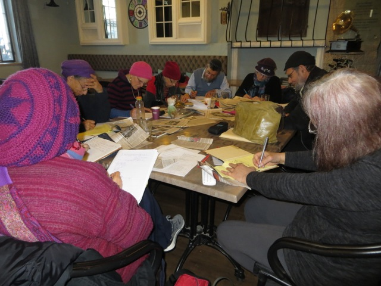
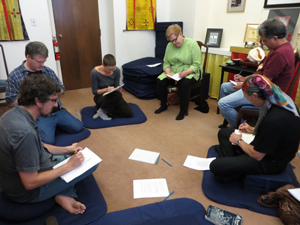
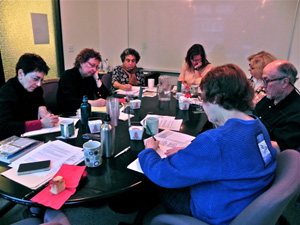

Workshops
Here is a sampling of workshops that Willa has offered in the past. If you are interested in inviting her to teach a workshop, contact us or call 503-248-4136.

Writing poetry inspired by the News, Jerusalem
01/20/15 & 01/25/15
Voices Israel: A Group of Israeli Poets who Write in English, Jerusalem & Zefat, Israel
USING THE NEWS FOR POETRY
Participants utilized articles found in newspapers and/or on the internet as prompts for new poems
11/23/14
Oregon Jewish Museum & Center for Holocaust Education, Portland
WRITING THE JEWISH EXPERIENCE
Participants explored in our own words what we consider the Jewish experience. In this generative workshop, works by Allen Ginsberg, Yehuda Amichai, Adrienne Rich, Grace Paley, Sabena Stark, Yuvi Zalkow, and others, were considered as motivations for expressing our deeply held sense of Jewish identity -- what it means to be Jewish and to write as a Jew.

WRITING THE BUDDHIST POEM Workshop
03/31/13
Portland Shambhala Center
WRITING THE BUDDHIST POEM
We will read Buddhist poems, discuss what makes them Buddhist and then write one of our own. 
WRITING THE JEWISH MOTHER Workshop.
11/04/12
Oregon Jewish Museum, Portland
WRITING THE JEWISH MOTHER
The Jewish mother has been exalted, maligned and ridiculed. In this workshop we went beyond stereotypes to write poetry and prose about the lives of Jewish mothers, who are ourselves, our parents, and our friends. Through the drafts, we revealed the complexity of the Jewish mother, who embraces many identities besides her role within the family. To embody the Jewish mother we looked at excerpts from Michael Gold, Clifford Odets, Philip Roth, Irena Klepfisz and Grace Paley, who have explored the Jewish mother in relation to the Holocaust, religious practice, immigration, assimilation and the women's movement.
02/18/12
Milwaukie Poetry Series Workshop. Pond House, OR
INVITING LITTLE RED RIDING HOOD, THE ORACLE, AND THE COAT OF MANY COLORS INTO OUR POEMS
In this poetry workshop we utilized myth, fairy tales, parables, legends from world spiritual traditions to discover how Indra’s web or a gnome might belong in our poems. Poets who have drank from this well: Ann Sexton, Yehuda Amichai, Lawrence Ferlinghetti, Mahmoud Darwish and Louise Gluck, etc., will be considered.
10/10/10
Wordstock, Portland THE POET'S PALATE
We fed our poetic appetites, and awakened our palates on the page. We wrote about the harvest, the marketplace, the sensuality of the epicurean experience, what we ingest, and what we imbibe.
12/05/09
CORVALLIS ART CENTER. OR
Sponsored by Calyx Books
DREAMING THE POEM
The logic of dreams can shake up our traditional way of thinking or writing, but a dream is not by itself a poem. Participants experienced how to transform dreams into poetry. Dream samples and poems inspired by dreams were provided.
08/23/09
At my Portland Office (one of a series of six summer workshops)
WRITING THE SPIRITUAL POEM
One's definition of the sacred is unique to each individual. Some of us believe there is a creator, some feel the numinous in the change of seasons, or simply in being totally in our present moment. Poems by such poets as Jane Hirshfield, William Stafford, Joy Harjo, Wislawa Szymborska, and Yehuda Amichai were utilized as prompts.
10/11/07, 10/10/05, 04/09/05
WORDSTOCK, Portland, OREGON STATE POETRY ASSOC. CONFERENCE, Eugene, TUCSON POETRY FESTIVAL, Arizona
CREATING POEMS THROUHG THE ARTIST’S LENS, WORDSTOCK, Portland
We employed the medium of photography for poem-making. Although New York's Museum of Modern Art did not create a photography department until 1940, photography has long been recognized as a fine art along with painting and sculpture. We viewed images of the familiar and the exotic, of the solitary and those in community, and read poems about place and the individual revealed through the painter's vision.
08/01/06
Newport, Oregon
POETRY OF PLACE
This workshop focused on the role of place in poetry. We explored the different inspirations that place can evoke in poem-making, how the childhood home, the vacation locales we will never see again, the towns we only read about, and sites of the imagination-- all become vibrant material for poems. We read place poems by contemporary poets and viewed digital images from familiar and exotic climes.
04/03/03
PORTLAND STATE UNIVERSITY CENTER FOR WRITING EXCELLENCE
Portland, OR
WRITING THE PERSONA POEM
We explored how writing in a voice other than one’s own paradoxically gives the poet the opportunity to explore what he or she feels most deeply. By getting "inside" the life of another human being, real or imagined, issues of empathy and compassion for others come to the fore. The master poets utilizing this approach, including Ai, Adrienne Rich, Peg Boyers, Robert McDowell, Richard Jones were discussed. Digital Images of individuals were also utilized to motivate the writing experience.